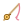

새 버전이 있어요
다리 밑
화면 중앙을 클릭해보세요
상점
확률: 전설 1% · 특급 11.6% · 희귀 29.9% · 일반 57.5%
10뽑은 특급 이상 1개 이상 확정 · 80뽑 안에 전설 확정(천장)
아직 잡아서 보관 중인 물고기가 없어요.

보관함
아직 보관 중인 물고기가 없어요.
설정
왼손 모드캐스팅바 등 플레이 HUD를 오른쪽으로
저등급 캐스팅 스킵낚싯대 등급이 오르면 이미 졸업한 낮은 등급(꽝/일반)은 더 이상 낚이지 않음
효과음 볼륨
정말 삭제할까요?
지금까지 잡은 물고기, 조개, 낚싯대 강화 진행 상황이 전부 사라지고 되돌릴 수 없어요.
NEW!
뽑기 결과
카드를 눌러서 하나씩 확인하세요